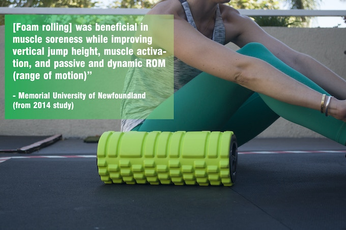
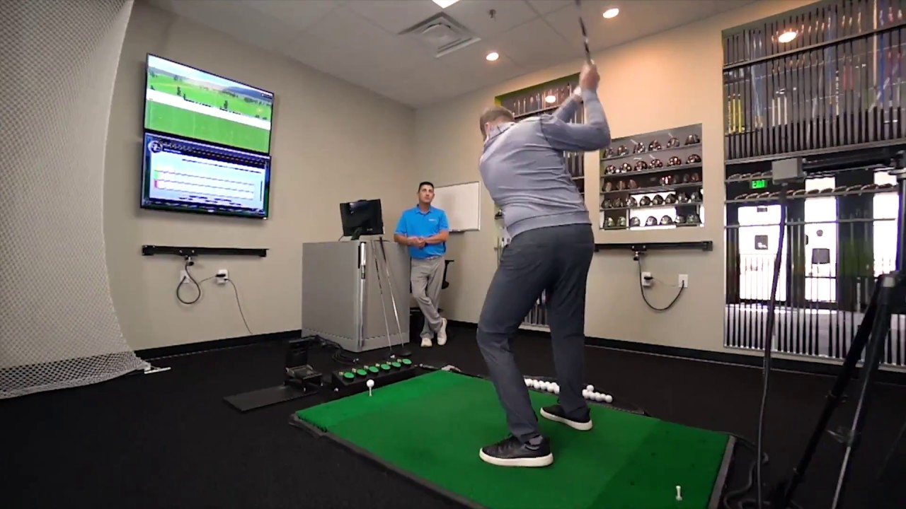

"Sports Recovery in a Portable Kit"
~ Koa Sports
"The Ultimate Portable Sports Recovery Kit is an incredible
durable and portable collection of products designed to help athletes recover faster, better
and stronger -- it's based in the science of massage and designed by a team of athletes, engineers
and fitness experts that have worked with over 10,000 athletes Paired with our
recovery guide, it has everything you need to recover faster, better and stronger."
~ Koa Sports
This product can be bought by clicking the link below.

© Image belongs to Koa Sports
"At some point you have to purchase your own clubs, and that's where the trouble begins.
How does anyone determine which are the right clubs for his game?
Technology has advanced this field quite a bit. Professional club fitters
can help golfers find the right clubs through the use of computer analysis of their swing.
Club fitters can measure club head speed, launch angle,
ball flight and grip strength. All of these factors will help the fitter make the proper
recommendation and give the golfer the opportunity to purchase the correct clubs for his game.
Those tools did not exist in previous years, and they give the golfer a better chance to enjoy the game and improve."
~ BleacherReport

© Image belongs to GOLFTEC
"Blast Motion's bat sensors analyze swings not just with raw data,
like bat speed and attack angle, but with analytics including its own plane,
onnection, and rotation metrics. The data can be paired with smartphone video,
through the Blast Vision product, to pair ball flight data
with the swing and receive auto-edited clips of each cut."
~ SportTechie
 © Image belongs to news.2dsports.org
© Image belongs to news.2dsports.org